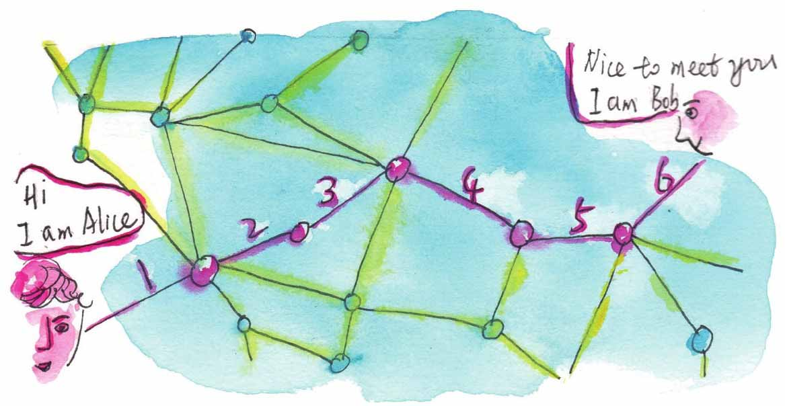

这两个图是一样的吗？
小文，前面我们提到了同构，要解释什么是同构，我们先看看下面的问题。
“爱丽丝的家可以直通银行和邮局”，这个情形怎么用图表示呢，你可能这样画：
但你的同桌可能这样画。
那么哪个图是正确的呢？
其实它们都可以表示爱丽丝的家与银行、邮局间的连通关系。
在图论中，把这样的两个图叫同构的图。
再举个例子，小文，你看看下面的图，左边的和右边的图看上去是不是差别挺大的？
但其实左图中的点V1、V2、V3、V4、V5分别对应右图中的点U1、U2、U3、U4、U5，左图中的六条边（V1，V2）、（V1，V3）、（V2，V3）、（V2，V4）、（V3，V5）、（V4，V5）分别与右图的六条边（U1，U2）、（U1，U3）、（U2，U3）、（U2，U4）、（U3，U5）、（U4，U5）一一对应。所以这两个图从结构上讲是等价、同构的图。
所谓图的同构，简单来说就是在不考虑边的形状、长度以及点的位置的情况下，两个图中的点和边的关联关系完全相同。
同样的道理，图（c）和图（d）同构，图（e）和图（f）同构。
Isomorphism（同构）这个词来源于两个希腊文，分别是isos（相等）和morphe（形式）。
随着点和边的增多，肉眼很难判断两个图是否同构，判断图的同构是图论中诸多难题中的一个。
相对来说，判断两个图不同构要相对容易一些，可以从两个图的顶点数、边数、度数序列是否相同来判断两个图是不是“非同构”。
小文读到这里，看了下时间，快六点半了，讲义内容看起来不少，还是跟妈妈先出门散步去。
转过几条街就是江边了，这里是小文一家最喜欢来的地方，岸边一如既往聚集了很多人。
人们更多的是在玩水，桥墩上聚集了不少男士，他们主要在做这件事：爬到不能再爬的地方往江里跳，跳水的形态各异，他们上上下下地折腾着，乐此不疲。
离江滩更远的深水处倒有一些正正规规的游泳者，他们身上系着橘红色“跟屁虫”，远处看十分显眼。仔细一看，其中有一位女士，她依次展示了蛙泳、自由泳、仰泳三种泳姿，显得很是自在与自信。
岸边的浅水处，一堆人在摸鱼，半个矿泉水瓶子的小鱼已经收集好了，炸一炸应该可以凑一盘夜宵。
狗主人在这里可以很放松，小狗和女主人待在游泳圈里，男主人拿根绳子牵着游泳圈，一家三口就这样漂着荡着，很是惬意。那边一条身材硕大的狼狗正在展示“狗刨”，动作十分标准、娴熟。
天空中不时有闪电。“要下雨了。”租游泳圈的老板跟小文妈妈闲聊着说，“现在游泳的人太少，七月份这里人多得密密麻麻的，下水都不好找地方。”
老板这句话提醒了小文，已经八月底了，快开学了呀，过不了多久就要离开这座待了这么久的江城了。
回来的路上，两人又聊开了。
“老妈，你说，英国科学家是一些什么人啊？”
“能不能说明白点啊？”小文经常冒出这样没头没脑的问话让妈妈很头疼。
“我发现，报纸上经常登一些某某科学家奇奇怪怪的新发现，而这些科学家好多是‘英国科学家’。”
“哈哈，说来听听！”
“比如前几天，我看到一篇报道，说英国科学家研究表明：罚点球只需闷头踢，还有英国科学家研究发现，1个喷嚏5分钟会传染50人！这些科学家研究的东西够奇特的。”
“哦，会不会是这个原因，英国有一个很有名的科普杂志，叫《新科学家》，它的总部设在伦敦，因为这份杂志的名气太大，所以它上面的消息，各种媒体总是愿意争着转载。”
“是这样吗？”
“我猜的。这些问题看起来奇怪，其实还是有道理的，‘罚点球只需闷头踢’这个说法，我这个足球盲不了解哈，但是你大概听说过这个说法：只需要通过5个人，你就可以认识美国总统。”
“听说过啊，比较流行。”
“它其实是一个叫‘六度分离理论’的变形说法，说的是在人际交往的脉络中，任意两个陌生人都可以通过朋友的朋友建立联系，这种联系最多只需通过五个朋友的“中转”就能达到目的。我们用顶点表示人，如果两个人相识就用线将对应的两个点连接起来，这样就构成了熟人关系图。科学家猜想，熟人关系图中任意两个顶点之间也许可以通过步长不超过6的路径来连接（连接两个人的一条边算一个步长）。有剧作家约翰·奎尔（John Guare）基于这个概念还写了个戏剧，名为《六度分离》。正好我的讲义里面也有这段哦，你到时看看吧。”

六度分离：A和B最多经过6个步长能互相认识
第二天，小文起床的时候妈妈已经出门了。今天小文跟同学约好了，到学校去跟老师道别。
出小区大门的时候，小文快速通过，因为这是最容易碰见熟人的场所，这包括爸爸妈妈的同事，小学、中学同学的家长等，他们一般喜欢说同样的话。幸亏爸爸这段时间出差，不在家，否则爸爸的同事“王博士”见到小文必会问：“你爸爸在不在家？”
最近他们的问话一般是这样的，“是小文啊，都长这么高了”，“考的是哪所大学啊”，有的干脆单刀直入直接问“高考多少分啊”。今天非常幸运，小区门口没人，小文一溜烟穿过小区大门。
小文家住江南，学校在江北。自从通了过江地铁，小文上学方便多了。但小文还是觉得原来坐轮渡过江更有意思。坐了几站公交车，上了地铁，小文顺利来到学校。
还没进校门，老远就看到校门口的红色条幅和光荣榜。小文的学校也算是本市的一所名校，时隔多年，今年她们学校终于再次出了本市的理科高考状元，自然要大书特写一番。话说这位高考状元是早就名声在外的“雨神”——雨神是个女生，她单名是个“雨”字。
小文这时候跟她的死党也碰头了，大家一起膜拜了“雨神”的照片后，来到班主任的办公室。班主任依然是活力过人的老样子，听她的说法，小文班上顺利完成了“高考指标”，看上去班主任非常满意，这时候正“陶小妹”“冲哥”地叫着大家伙的爱称，询问大家的去处，说着一些鼓励的话。
在小文看来，整个告别过程挺无趣的。只有一件事，让小文觉得有点兴奋，就是在回家等地铁的时候，看到了平时跟“雨神”齐名的“全民男神”。
话说这个“全民男神”，人长得既高又帅，成绩排名长期徘徊在全校前20名不下来，并且据说人品还不错。只可惜“全民男神”没有看到小文，不过即使看到了，他也不认识小文啊。
如果说，最多需要通过5个人，就可以认识美国总统，那如果想认识这位“全民男神”，要通过几个人呢？慢着，如果全民男神想认识我，或者美国总统想认识我小文，会不会更快呢？
这样胡思乱想着，小文回到了家。丽仔大概是饿坏了，见到有人回来，一通乱叫，小文赶紧抓了把猫粮放在猫盆里。想着妈妈昨天说的“六度分离”的问题，小文钻进自己房间，继续看妈妈的讲义。